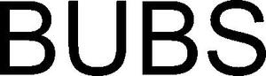

Trade Mark Journal No.2026/007 13 February 2026
WO0000001883443 (9,11,14,16,18,20,21,24,25,27,28)
Office of origin: Norway
Date of International Registration:19 June 2025
Date of designation in the UK:
19 June 2025

International priority date claimed: 20 December 2024
(Norway)
(202414563)
- Class 9
- Downloadable computer games; downloadable graphics for mobile telephones; mobile phone cases; covers for laptops, tablets and smartphones.
- Class 11
- Candle lanterns.
- Class 14
- Jewellery; bracelets; wristwatches; ornaments; clock cases; brooches; clocks and watches, electric; necklaces [jewellery]; watch case; watches; cuff links; lanyards for keys; key rings; pins; earrings.
- Class 16
- Posters; calendars; note books; cardboard boxes or paper boxes; flip chart; paper wipes; paper placemats; cards; paper; ornaments made of paper; paper banners; pens; pencil case; writing or drawing books; desk pad; writing paper; writing instruments; sewing patterns; paintings; print [engravings]; printers' blankets, not of textile; printed matter; coasters of paper.
- Class 18
- Bags; sports bags; makeup boxes, empty; handbags; card holder; key case; net bags for shopping; suitcase packing organizers; umbrellas; umbrella case; parasols; pocket wallets; purses; suitcases; rucksacks; reusable shopping bags; tote bag.
- Class 20
- Furniture, mirrors, picture frames; containers and bins, not of metal, for storage and transport; unworked or semi-worked bone, horn, whalebone or mother-of-pearl; shells; meerschaum; yellow amber; trays, not of metal; embroidery frames; works of art of wood, wax, plaster or plastic; hooks, not of metal; wooden or plastic boxes; cushions.
- Class 21
- Household or kitchen utensils and containers; kitchen utensils and tableware, except forks, knives and spoons; combs and sponges; brushes, except paintbrushes; articles for cleaning purposes; unworked or semi-worked glass, except building glass; glass, porcelain and ceramic goods; glass boxes; bath sponges; pastry molds; containers for household or kitchen purposes; tableware; place mats, not of paper or textiles; trays for household purposes; cutting boards; bread baskets; bread bins; bowls; cups; dishwashing brushes; dishcloths; water glasses; drinking bottles; drinking vessels; disposable table plates; figurines made of porcelain, ceramic, earthenware, terracotta or glass; flasks; cookery molds; cooking utensils; fly catchers; fruit bowls; cabarets [trays]; beverageware; leather coasters, plastic coasters; containers for household or kitchen use; barbecue forks; grill supports; barbecue tongs; potholders; oven mitts; vegetable dishes; utensils for household purposes; household porcelain; ice cube moulds; coffee sets; cookie jars; cake moulds; cookie [biscuit] cutters; decanters; trivets [table utensils]; artwork made of porcelain, ceramic, earthenware, terracotta or glass; baskets for household use; jars; spice racks; kitchenware; candle drip rings; sandwich boxes; mugs; paper muffin tins; trash cans for household purposes; paper plates; salad bowls; napkin rings; signs made of porcelain or glass; bowls for storage purposes; cutting boards for the kitchen; spinning boards for household purposes; sugar bowls; straws for drinking; dishes; tea caddies; saucers; teapot lid; teapots; tea set; insulating flasks; soap boxes; soap dispenser bottles; soap holders; vases; egg cups.
- Class 24
- Textiles and substitutes for textiles; household linen; curtains and drapes made of textile or plastic; tablecloths, table runners and table cloths, not of paper; placemats and table mats of textile; tablecloths; flag made of textile or plastic; curtains made of textile or plastic; hand towels; pillowcases; tea towels; sheets [textile]; textile bedding sets; textile furniture covers; picnic blankets; duvet covers; travel blankets; bedspreads; textile labels; textile towels; fabrics; cloth doilies; coasters of textile; pillowcase; cushion covers; furniture covers; oilcloth for use as tablecloths.
- Class 25
- Clothing; footwear; headgear; bathing trunks; bathing suits; bathing caps; bath robes; aqua shoes; slippers; boxer shorts; trousers; aprons; dresses; gaiters; short-sleeved shirts; lounging robes; tuques; head sweatbands; raincoats; sandals; neckerchiefs; scarfs; shawls; shoes; socks; sportswear; sports shirts; beachwear; beach shoes; stockings; tee-shirts.
- Class 27
- Carpets.
- Class 28
- Christmas tree decorations; Christmas tree ornaments in the shape of balls.
Orkla Snacks Sverige AB
Representative: ACAPO ONSAGERS AS, Edvard Griegs vei 1, N-5059 Bergen, NORWAY